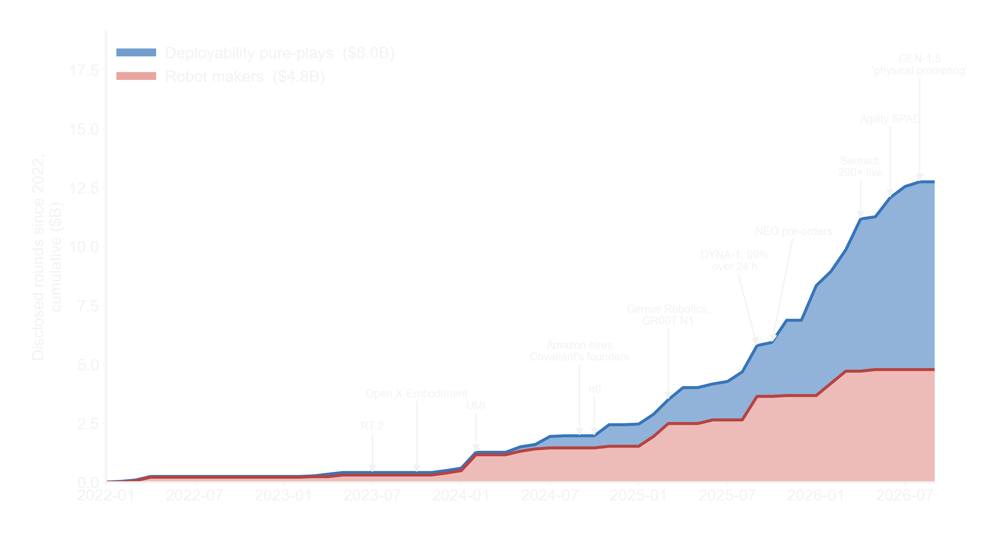
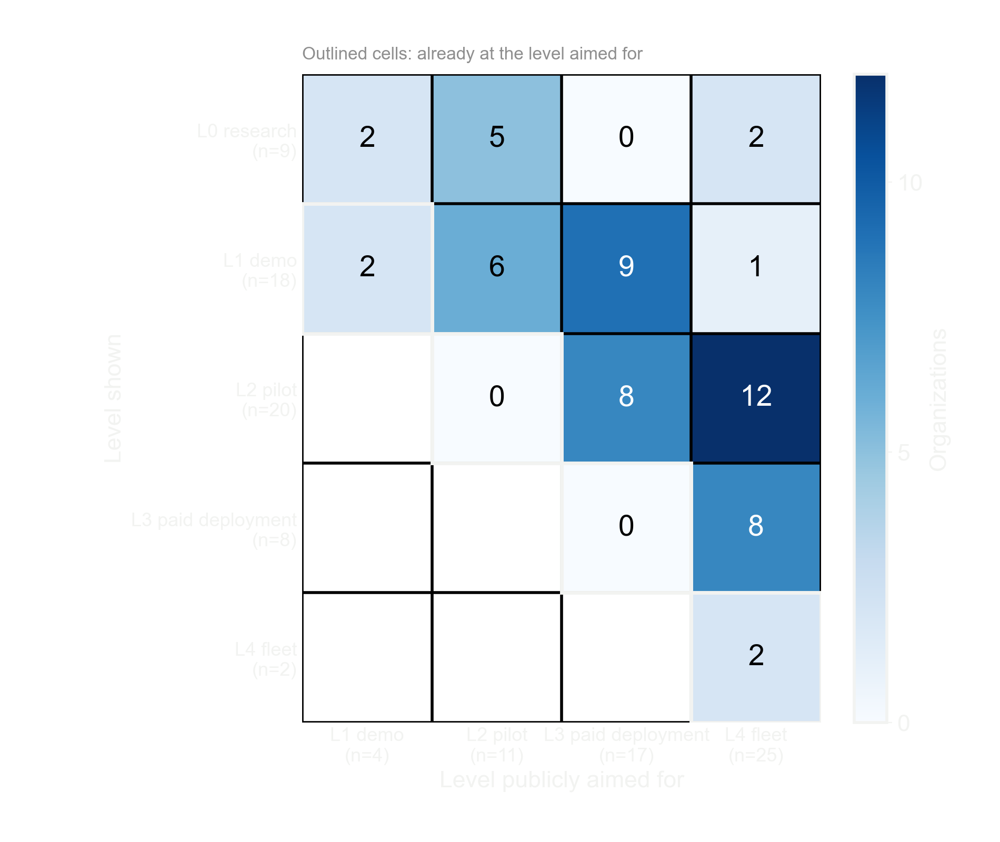
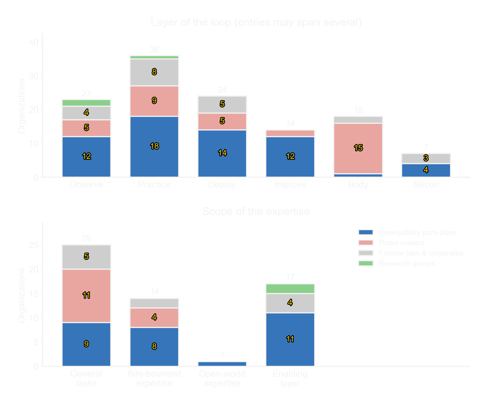

<meta charset="utf-8">
<title>Embodied Expertise List — The deployability landscape</title>
<meta name="viewport" content="width=device-width, initial-scale=1">
<link rel="preconnect" href="https://fonts.googleapis.com">
<link rel="stylesheet" href="https://fonts.googleapis.com/css2?family=Inter:wght@400;500;600&family=Instrument+Serif:ital@0;1&family=DotGothic16&family=Doto:wght@800;900&family=IBM+Plex+Mono:wght@400;500&display=swap">
<style>
  /* Dark-only since the ui-restyle branch: the glass/glow language doesn't survive a
     light palette, so the old light theme and data-theme toggle blocks were removed. */
  :root{
    --paper:#000000; --surface:rgba(255,255,255,.035); --ink:#F2F3F1; --muted:#8E8E8E; --faint:#6E6E6E;
    --line:rgba(255,255,255,.14); --line-soft:rgba(255,255,255,.07);
    /* accent family follows the hero's warm dune light (peach/mauve), not green */
    --accent:#E8A87C; --accent-ink:#F0C29B; --accent-soft:rgba(232,168,124,.16); --accent-wash:rgba(255,255,255,.06);
    --l1:#4A3242; --l1-ink:#D8C2D6; --l2:#6E4658; --l2-ink:#ECD2DC; --l3:#A06A6E; --l3-ink:#FBF3F0; --l4:#E8A87C; --l4-ink:#2A1508;
    --warn:#D3B45E; --chip:rgba(255,255,255,.07);
    --shadow:0 1px 2px rgba(0,0,0,.5),0 8px 30px rgba(0,0,0,.4);
    --glass-hi:rgba(255,255,255,.45);
    --font-sans:"Inter","Segoe UI",system-ui,-apple-system,sans-serif;
    --font-display:"DotGothic16","Doto",ui-monospace,monospace;
    --glow:0 0 0 1px rgba(255,255,255,.15),0 0 22px rgba(255,255,255,.32),0 0 44px rgba(255,255,255,.12);
  }
  *{box-sizing:border-box}
  html{scroll-behavior:smooth}
  @media (prefers-reduced-motion: reduce){ html{scroll-behavior:auto} *{animation:none!important;transition:none!important} }
  body{
    margin:0; background:var(--paper); color:var(--ink);
    font-family:var(--font-sans);
    font-size:15px; line-height:1.55;
    -webkit-font-smoothing:antialiased;
  }
  /* Dim color field behind the whole page so glass panels have something to blur. */
  body::before{
    content:""; position:fixed; inset:0; z-index:-1; pointer-events:none;
    background:
      radial-gradient(52% 38% at 22% 12%, rgba(146,110,180,.14), transparent 70%),
      radial-gradient(46% 34% at 80% 30%, rgba(196,128,150,.10), transparent 70%),
      radial-gradient(60% 44% at 55% 88%, rgba(232,168,124,.06), transparent 72%),
      #000;
  }
  a{color:var(--accent-ink); text-decoration:none}
  a:hover{text-decoration:underline}
  .mono{font-family:"IBM Plex Mono",ui-monospace,SFMono-Regular,Menlo,monospace}
  .wrap{max-width:1180px; margin:0 auto; padding:0 24px}

  /* ---------- floating pill nav ---------- */
  .topbar{position:fixed; top:0; left:0; right:0; z-index:50; display:flex; justify-content:center;
    padding:clamp(12px,2vh,18px) 16px; pointer-events:none;
    transition:opacity .35s, transform .35s}
  /* v0.86 trial (owner request): pill nav hidden — the hero title carries the brand and the
     page is one scroll anyway. Markup and the scroll handler stay; delete this line to bring
     it back. The UPDATED date lives in the pill, so it is off-page while this trial runs. */
  .topbar{display:none}
  /* The pill belongs to the hero — once you scroll into the list it gets out of the way. */
  .topbar.away{opacity:0; transform:translateY(-14px)}
  .topbar.away .navpill{pointer-events:none}
  /* Same dark-glass language as the hero trust pill — no solid white chrome over the scene. */
  .navpill{--accent:#F0C29B; pointer-events:auto; display:flex; align-items:center; gap:2px;
    background:rgba(30,24,34,.55); backdrop-filter:blur(10px); -webkit-backdrop-filter:blur(10px);
    border:1px solid rgba(255,255,255,.28); border-radius:999px; padding:8px 16px 8px 15px;
    box-shadow:inset 0 1px 1px rgba(255,255,255,.12), 0 4px 18px rgba(10,6,14,.25);
    animation:slideDown .7s cubic-bezier(.22,1,.36,1) both}
  .brand{display:flex; align-items:center; margin-right:12px}
  /* brand mark = the three R/S/I rings, in the same glass language as the pill itself */
  .navpill .tava{--ts:30px; padding:2px; background:rgba(255,255,255,.1); border-color:rgba(255,255,255,.4)}
  .navpill .tava i{background:transparent; color:#fff; font-size:13.5px}
  .navpill .tava + .tava{margin-left:-10px}
  .navpill nav{display:flex; align-items:center}
  .navpill nav a{font-size:13px; font-weight:500; letter-spacing:-.01em; color:#E4E0E6; opacity:.62;
    padding:6px 11px; border-radius:999px; white-space:nowrap; transition:opacity .15s}
  .navpill nav a:hover{opacity:1; text-decoration:none}
  .updated{font-family:"IBM Plex Mono",monospace; font-size:10.5px; letter-spacing:.04em; color:#B7B2BB;
    border-left:1px solid rgba(255,255,255,.2); padding:2px 0 2px 15px; margin-left:10px; white-space:nowrap}
  .updated b{color:#fff; font-weight:500}
  @media(max-width:560px){ .navpill nav{display:none} }
  #orgview .wrap{padding-top:84px}
  #directory{scroll-margin-top:64px}

  /* ---------- hero (full-viewport, luminous dune scene) ---------- */
  .hero{position:relative; overflow:hidden;
    display:flex; flex-direction:column;
    /* v0.78: hero compressed to headline-height so the first viewport shows the title AND the
       whole chart. Every scene layer (sky gradient, dunes, rain) is %-positioned, so shrinking
       the hero pulls the pale band and the character rain up with it — the headline lands in
       the dark zone below the crest and stays readable. */
    justify-content:flex-end;
    /* v0.87: title nudged ~40px down into the dark zone (owner marked the spot) — the shift
       moved from bottom padding to top so the chart below stays where it was */
    padding:clamp(130px,17vh,210px) 0 clamp(6px,1vh,14px)}   /* fold budget scales with viewport height */
  .hero[hidden]{display:none}
  /* sky: pale lavender top, warm horizon band, falling to black */
  .hero::before{content:""; position:absolute; inset:0; pointer-events:none;
    background:
      radial-gradient(48% 18% at 74% 40%, rgba(246,182,140,.6), transparent 72%),
      radial-gradient(38% 14% at 12% 34%, rgba(234,198,222,.55), transparent 72%),
      linear-gradient(180deg,#ebe9f0 0%,#ded5e8 8%,#cdbad6 15%,#c1a0b8 21%,#a97f95 27%,#7c5468 34%,#412a3e 44%,#170e1e 58%,#000 86%)}
  /* dunes: soft dark mounds with glowing rims, blurred into shape
     (grain lives in .grain — a filter here would blur the noise away with it) */
  .dunes{position:absolute; inset:-6%; pointer-events:none; filter:blur(8px);
    animation:drift 40s ease-in-out infinite alternate;
    background:
      radial-gradient(28% 12% at 76% 34%, rgba(244,168,120,.4), transparent 66%),
      radial-gradient(24% 10% at 16% 29%, rgba(234,200,226,.32), transparent 68%),
      radial-gradient(56% 36% at 42% 54%, #180d1d 0%, #180d1d 52%, transparent 72%),
      radial-gradient(46% 30% at 80% 62%, #2f151d 0%, #24101a 48%, transparent 70%),
      radial-gradient(30% 15% at 86% 45%, rgba(164,92,78,.4), transparent 68%),
      radial-gradient(74% 44% at 46% 88%, #050207 0%, #0d0610 56%, transparent 80%),
      radial-gradient(110% 44% at 50% 108%, #04020a 0%, transparent 84%)}
  /* the twilight rim glows breathe — slow swell along the light/dark boundary */
  .dunes::before{content:""; position:absolute; inset:0;
    background:
      radial-gradient(32% 14% at 76% 34%, rgba(248,174,124,.55), transparent 68%),
      radial-gradient(27% 12% at 16% 29%, rgba(238,204,230,.42), transparent 70%),
      radial-gradient(34% 17% at 86% 45%, rgba(178,100,82,.5), transparent 68%);
    animation:breathe 7.5s ease-in-out infinite alternate}
  @keyframes breathe{from{opacity:.3; transform:translate3d(0,.5%,0) scale(1)}
    to{opacity:1; transform:translate3d(0,-.7%,0) scale(1.035)}}
  /* film grain over the whole scene — unblurred sibling so the noise stays crisp */
  .grain{position:absolute; inset:0; pointer-events:none; mix-blend-mode:overlay; opacity:.95;
    background:url('')}
  /* extra fine grain + fade to black so the list section takes over seamlessly */
  .hero::after{content:""; position:absolute; inset:0; pointer-events:none;
    background:
      linear-gradient(180deg, transparent 0%, transparent 46%, rgba(0,0,0,.5) 74%, #000 96%),
      url('')}
  @keyframes drift{from{transform:translate3d(-1.5%,-.8%,0) scale(1)} to{transform:translate3d(1.5%,1%,0) scale(1.05)}}
  /* dot-matrix character rain over the sky */
  .rain{position:absolute; inset:0 0 52% 0; padding:14px 10px 0; pointer-events:none; overflow:hidden;
    font-family:var(--font-display); font-weight:400; font-synthesis:none; color:#fff;
    font-size:clamp(12px,1.05vw,17px); line-height:2.1; letter-spacing:.42em; white-space:pre;
    text-shadow:0 1px 4px rgba(70,45,90,.3);
    -webkit-mask-image:linear-gradient(180deg,#000 0%,#000 58%,transparent 96%);
    mask-image:linear-gradient(180deg,#000 0%,#000 58%,transparent 96%)}
  .rain div{overflow:hidden}
  @keyframes flick{50%{opacity:.08}}
  .hero-inner{position:relative; z-index:1; width:100%; max-width:1280px; margin:0 auto; padding:0 24px;
    display:flex; flex-direction:column; align-items:center; text-align:center}
  /* trust row: overlapping avatar rings + dark pill, exactly A's language */
  .trustrow{--ts:clamp(36px,4.5vw,42px); display:inline-flex; align-items:center;
    margin-bottom:clamp(18px,3vh,30px)}
  .tava{position:relative; width:var(--ts); height:var(--ts); border-radius:50%;
    background:#28282a; border:1px solid rgba(255,255,255,.4); padding:5px; box-sizing:border-box;
    transition:transform .35s}
  .tava i{display:grid; place-items:center; width:100%; height:100%; border-radius:50%;
    background:#fff; color:#111; font-style:normal; font-family:var(--font-display); font-weight:400; font-synthesis:none;
    font-size:calc(var(--ts)*.28); line-height:1}
  .tava + .tava{margin-left:calc(var(--ts)*-.42)}
  .tava:nth-child(1){z-index:1} .tava:nth-child(2){z-index:2} .tava:nth-child(3){z-index:4}
  .trustrow:hover .tava:nth-child(1){transform:translateY(-2px)}
  .trustrow:hover .tava:nth-child(2){transform:translateY(-4px)}
  .trustrow:hover .tava:nth-child(3){transform:translateY(-2px)}
  .trustpill{display:inline-flex; align-items:center; height:var(--ts); z-index:3;
    font-size:clamp(12px,1.4vw,13.5px); font-weight:500; color:#c4c2c3; white-space:nowrap;
    background:#28282a; border:1px solid rgba(255,255,255,.4); border-radius:999px;
    margin-left:calc(var(--ts)*-.42); padding-left:calc(var(--ts)*.58 + 4px); padding-right:18px}
  .trustpill b{color:#fff; font-weight:600}
  /* scoped to the hero — a bare `h1` selector also hit the detail page's .org-title and
     centered the name over the wider founders line, leaving a blank block to its left */
  .hero h1{margin:0; display:flex; flex-direction:column; align-items:center}
  /* v0.77: headline moved off the dot-matrix face (owner: too informal to carry the page) to
     Instrument Serif — the display serif the section headings already use. One line, never wrapped.
     DotGothic16 stays for the scene texture (rain, avatars, rank numbers). */
  h1 .hl{font-family:"Instrument Serif",Georgia,serif; font-weight:400; color:#fff;
    font-size:clamp(17px,4.6vw,66px); line-height:1.12; letter-spacing:.005em; white-space:nowrap;
    text-shadow:0 2px 18px rgba(20,10,30,.4);
    opacity:0; transform:translateY(14px);
    animation:headlineFade .85s cubic-bezier(.22,1,.36,1) forwards; animation-delay:var(--d,0s)}
  @media(max-width:560px){ h1 .hl{font-size:4.6vw} }
  .lede{max-width:56ch; color:#e2dfe4; opacity:.92; font-size:clamp(14.5px,1.55vw,17px); line-height:1.55; margin:0 0 30px;
    text-shadow:0 1px 14px rgba(10,5,18,.55)}
  .cta{display:inline-block; margin-top:clamp(24px,4.5vh,48px); color:#fff; font-weight:500;
    background:rgba(30,24,34,.5); backdrop-filter:blur(10px); -webkit-backdrop-filter:blur(10px);
    border:1px solid rgba(255,255,255,.32);
    font-size:clamp(13.5px,1.5vw,14.5px); letter-spacing:-.01em;
    padding:clamp(10px,1.5vh,12px) clamp(22px,3vw,28px); border-radius:999px;
    box-shadow:inset 0 1px 1px rgba(255,255,255,.12);
    transition:transform .2s, border-color .2s, background .2s}
  .cta:hover{transform:translateY(-2px); text-decoration:none;
    background:rgba(44,36,50,.6); border-color:rgba(255,255,255,.55)}
  .statrow{position:relative; z-index:1; display:grid; grid-template-columns:repeat(4,1fr); gap:18px;
    width:100%; max-width:920px; padding:0 24px; margin:clamp(34px,6vh,58px) auto 0}
  @media(max-width:720px){ .statrow{grid-template-columns:repeat(2,1fr); gap:26px 18px} }
  .stat{display:flex; flex-direction:column; align-items:center; gap:5px}
  .stat-ico{font-family:var(--font-display); font-weight:400; font-synthesis:none; font-size:clamp(20px,3vw,30px); color:#fff; line-height:1}
  .stat-val{font-size:clamp(18px,2.2vw,26px); font-weight:600; letter-spacing:-.025em; font-variant-numeric:tabular-nums; color:#fff}
  .stat-label{font-size:clamp(11px,1.2vw,12.5px); color:var(--muted)}
  /* entrance + scroll-reveal */
  .anim{opacity:0; transform:translateY(22px) scale(.98); filter:blur(6px);
    animation:reveal .85s cubic-bezier(.22,1,.36,1) forwards; animation-delay:var(--d,0s)}
  @keyframes reveal{to{opacity:1; transform:none; filter:none}}
  @keyframes headlineFade{to{opacity:1; transform:none}}
  @keyframes slideDown{from{opacity:0; transform:translateY(-18px)} to{opacity:1; transform:none}}
  .sr{opacity:0; transform:translateY(18px); transition:opacity .7s cubic-bezier(.22,1,.36,1), transform .7s cubic-bezier(.22,1,.36,1)}
  .sr.in{opacity:1; transform:none}
  @media (prefers-reduced-motion: reduce){
    .anim, h1 .hl, .sr{opacity:1; transform:none; filter:none}
  }

  /* ---------- about note ---------- */
  /* Faint aurora washes behind the content sections — the glass panels need
     coloured light behind them or backdrop-blur has nothing to show. */
  #directory, #orgview, #takeoff{position:relative}
  /* aurora washes feed the glass panels; the takeoff section lost its glass in v0.70 and the
     wash was reading as a tint seam against the hero — so no ::before there */
  #directory::before, #orgview::before{content:""; position:absolute; inset:0; pointer-events:none;
    background:
      radial-gradient(42% 26% at 14% 16%, rgba(158,112,196,.09), transparent 70%),
      radial-gradient(38% 22% at 88% 42%, rgba(216,128,152,.07), transparent 70%),
      radial-gradient(40% 22% at 30% 66%, rgba(120,96,190,.06), transparent 72%),
      radial-gradient(46% 24% at 60% 94%, rgba(232,168,124,.05), transparent 72%)}
  #directory .wrap, #orgview .wrap, #takeoff .wrap, #figures .wrap{position:relative; max-width:1420px}
  /* liquid-glass panel recipe: translucent fill + deep blur + gradient edge (bright top/bottom) */
  .note, .card, .meth{position:relative; overflow:hidden;
    background:linear-gradient(180deg, rgba(255,255,255,.06), rgba(255,255,255,.025));
    backdrop-filter:blur(18px) saturate(120%); -webkit-backdrop-filter:blur(18px) saturate(120%);
    box-shadow:inset 0 1px 1px rgba(255,255,255,.12), 0 24px 60px rgba(0,0,0,.55)}
  .note::before, .card::before, .meth::before{content:""; position:absolute; inset:0; border-radius:inherit; padding:1.4px;
    background:linear-gradient(180deg, var(--glass-hi) 0%, rgba(255,255,255,.15) 20%, rgba(255,255,255,0) 40%,
      rgba(255,255,255,0) 60%, rgba(255,255,255,.15) 80%, var(--glass-hi) 100%);
    -webkit-mask:linear-gradient(#fff 0 0) content-box, linear-gradient(#fff 0 0);
    -webkit-mask-composite:xor; mask-composite:exclude; pointer-events:none}
  .note{margin:26px 0 0; padding:18px 20px; border:none; border-radius:16px}

  /* ---------- takeoff: capital, rounds and shipped results on one time axis ---------- */
  #takeoff{padding:clamp(14px,5vh,56px) 0 0; scroll-margin-top:64px}
  #takeoff[hidden]{display:none}
  .takeoff{margin:0}
  .tk-caption{margin:30px 0 0}
  .tk-caption h3{margin:0 0 6px; font-size:12px; font-family:"IBM Plex Mono",monospace; letter-spacing:.1em; text-transform:uppercase; color:var(--accent-ink)}
  .takeoff h2{font-size:clamp(20px,2.3vw,26px); margin:2px 0 6px}
  .tk-sub{color:var(--muted); font-size:14px; margin:0 0 10px; line-height:1.55}
  .tk-sub b{color:var(--ink); font-weight:500}
  .tk-chart{overflow-x:auto; overflow-y:hidden}
  .tk-chart svg{display:block; width:100%; min-width:760px; height:auto}
  .tk-chart svg text{font-family:"IBM Plex Mono",monospace}
  .tk-chart svg text.halo{paint-order:stroke fill; stroke:#0e0d10; stroke-width:4px; stroke-linejoin:round}
  .tk-chart svg .ann{transition:opacity .16s ease}
  .tk-chart svg g.ann text{pointer-events:none}   /* hover falls through to the hit rect beneath */
  .tk-chart svg.tk-dim .ann{opacity:.16}
  .tk-chart svg.tk-dim .ann.hot{opacity:1}
  /* growth animation: on first view the curve sweeps out left→right (a clipPath rect driven by
     rAF over ~5s) and each mark/stem/label pops in as the sweep passes its node. .tk-pre needs
     !important — hover's .tk-dim .ann.hot out-specifies it and would reveal labels early. */
  .tk-chart svg .tk-pre{opacity:0 !important; pointer-events:none}
  .tk-chart svg.tk-growing .ann, .tk-chart svg.tk-growing .mark, .tk-chart svg.tk-growing .tk-end{transition:opacity .45s ease}
  .tk-chart .mark{cursor:pointer; outline:none}
  .tk-chart .mark:hover .m, .tk-chart .mark:focus-visible .m{filter:brightness(1.3)}
  .tk-chart .mark:focus-visible .m{stroke:#fff}
  .tk-chart .mark:hover rect, .tk-chart .mark:focus-visible rect{fill:rgba(255,255,255,.07)}
  .tk-tip{position:fixed; z-index:30; pointer-events:none; display:none; max-width:290px;
    background:#0b0a0d; border:1px solid var(--line); border-radius:8px; padding:8px 11px;
    font-size:12.5px; line-height:1.45; box-shadow:0 8px 28px rgba(0,0,0,.6)}
  .tk-tip .d{font-family:"IBM Plex Mono",monospace; color:var(--accent-ink); font-size:11px; letter-spacing:.06em}
  .tk-tip .c{font-weight:600; color:var(--ink)}
  .tk-tip .e{color:var(--muted)}
  .tk-foot{color:var(--faint); font-size:12.5px; margin:8px 0 0; line-height:1.5}
  .tk-notes{margin-top:6px}
  .tk-notes summary{cursor:pointer; list-style:none; color:var(--faint); font-size:11px; font-family:"IBM Plex Mono",monospace; letter-spacing:.06em; opacity:.75}
  .tk-notes summary::-webkit-details-marker{display:none}
  .tk-notes summary::before{content:"▸"; display:inline-block; width:12px; transition:transform .16s ease}
  .tk-notes[open] summary::before{transform:rotate(90deg)}
  .tk-notes summary:hover{opacity:1; color:var(--muted)}
  .note h3{margin:0 0 6px; font-size:12px; font-family:"IBM Plex Mono",monospace; letter-spacing:.1em; text-transform:uppercase; color:var(--accent-ink)}
  .note p{margin:0; color:var(--muted); font-size:14px; max-width:100ch}
  .note p + p{margin-top:9px}
  .note ul{margin:9px 0 0; padding:0; list-style:none; display:flex; flex-direction:column; gap:6px}
  .note li{color:var(--muted); font-size:14px; max-width:100ch; padding-left:14px; position:relative}
  .note li::before{content:"→"; position:absolute; left:0; color:var(--accent); font-size:12px}
  .note li b{color:var(--ink); font-weight:600}

  /* ---------- sections ---------- */
  section{padding:44px 0 8px}
  #figures{padding:clamp(14px,4vh,44px) 0 0; scroll-margin-top:64px}
  #figures[hidden]{display:none}
  .figs{display:grid; grid-template-columns:1fr 1fr; gap:26px 32px; align-items:start; margin-top:14px}
  .figs figure{margin:0}
  .figs img{display:block; width:100%; height:auto}
  .figs figcaption{color:var(--muted); font-size:13px; line-height:1.5; margin-top:8px}
  .figs figcaption b{color:var(--ink); font-weight:500}
  .figs-foot{color:var(--faint); font-size:11.5px; font-family:"IBM Plex Mono",monospace; letter-spacing:.04em; margin:16px 0 0}
  @media (max-width:820px){.figs{grid-template-columns:1fr}}
  h2{font-weight:600; font-size:27px; margin:0 0 6px; letter-spacing:-.02em}
  h2 em{font-family:"Instrument Serif",Georgia,serif; font-style:italic; font-weight:400; letter-spacing:0}
  .sect-sub{color:var(--muted); font-size:14.5px; margin:0 0 20px; max-width:82ch}

  .rank-note{font-size:13px; color:var(--faint); max-width:100ch; margin:0 0 4px; line-height:1.55}
  .note .rank-note{margin:0 0 2px}
  .rank-note-label{font-family:"IBM Plex Mono",monospace; font-size:10px; letter-spacing:.11em; text-transform:uppercase;
    color:var(--accent-ink); margin-right:8px}

  tr.group td{background:var(--chip); color:var(--faint); font-family:"IBM Plex Mono",monospace; font-size:10px;
    letter-spacing:.13em; text-transform:uppercase; padding:7px 12px; border-bottom:1px solid var(--line)}

  /* ---------- controls ---------- */
  .controls{display:flex; flex-wrap:wrap; gap:10px; align-items:center; margin:18px 0 14px}
  .search{flex:1 1 200px; min-width:180px; max-width:320px; position:relative}
  .search input{width:100%; padding:8px 12px 8px 30px; border:1px solid var(--line); border-radius:999px;
    background:rgba(255,255,255,.05); backdrop-filter:blur(10px); -webkit-backdrop-filter:blur(10px);
    box-shadow:inset 0 1px 1px rgba(255,255,255,.08); color:var(--ink); font:inherit; font-size:13.5px}
  .search input:focus{outline:2px solid var(--accent); outline-offset:-1px}
  .search::before{content:"⌕"; position:absolute; left:10px; top:50%; transform:translateY(-52%); color:var(--faint); font-size:15px}
  select{padding:8px 12px; border:1px solid var(--line); border-radius:999px;
    background:rgba(255,255,255,.05); backdrop-filter:blur(10px); -webkit-backdrop-filter:blur(10px);
    box-shadow:inset 0 1px 1px rgba(255,255,255,.08); color:var(--ink); font:inherit; font-size:13px}
  select:focus{outline:2px solid var(--accent); outline-offset:-1px}
  .seg-tabs{display:flex; gap:0; border:1px solid var(--line); border-radius:999px; overflow:hidden;
    background:rgba(255,255,255,.05); backdrop-filter:blur(10px); -webkit-backdrop-filter:blur(10px);
    box-shadow:inset 0 1px 1px rgba(255,255,255,.08)}
  .seg-tabs button, .view-tabs button{border:0; background:transparent; color:var(--muted); font-family:"IBM Plex Mono",monospace; font-size:11.5px; letter-spacing:.04em; padding:8px 12px; cursor:pointer}
  .seg-tabs button + button{border-left:1px solid var(--line)}
  /* Controls use a neutral high-contrast selected state; the accent/green family is
     reserved for the category badges so a selected tab never reads as an RSI badge. */
  .seg-tabs button[aria-pressed="true"], .view-tabs button[aria-pressed="true"]{background:var(--ink); color:var(--paper)}
  .seg-tabs button:not([aria-pressed="true"]):hover, .view-tabs button:not([aria-pressed="true"]):hover{color:var(--ink); background:var(--chip)}
  .seg-tabs button:focus-visible, .view-tabs button:focus-visible, .btn:focus-visible{outline:2px solid var(--accent); outline-offset:-2px}
  .view-tabs{display:flex; border:1px solid var(--line); border-radius:999px; overflow:hidden;
    background:rgba(255,255,255,.05); backdrop-filter:blur(10px); -webkit-backdrop-filter:blur(10px);
    box-shadow:inset 0 1px 1px rgba(255,255,255,.08)}
  .view-tabs button + button{border-left:1px solid var(--line)}
  .btn{border:1px solid var(--line); background:var(--surface); color:var(--ink); border-radius:6px; padding:8px 12px; font-family:"IBM Plex Mono",monospace; font-size:11.5px; letter-spacing:.04em; cursor:pointer}
  .btn:hover{border-color:var(--accent); color:var(--accent-ink)}
  .btn.primary{background:var(--accent); border-color:var(--accent); color:#2A1508}
  .count{font-family:"IBM Plex Mono",monospace; font-size:12px; color:var(--muted); margin:2px 0 10px}
  .count b{color:var(--ink); font-weight:500}
  .countrow{display:flex; align-items:baseline; flex-wrap:wrap; gap:0 4px}
  .filter-row{display:flex; align-items:center; gap:12px; flex-wrap:wrap; margin:2px 0 4px}
  /* Squared + mid-tone = a label. Rounded pills are the clickable things. */
  .filter-label{font-family:"IBM Plex Mono",monospace; font-size:10px; letter-spacing:.13em; text-transform:uppercase;
    padding:5px 11px; border-radius:5px; background:var(--muted); color:var(--paper); white-space:nowrap}
  .chips{display:flex; flex-wrap:wrap; gap:6px}
  .chips button{border:1px solid var(--line); background:rgba(255,255,255,.05);
    backdrop-filter:blur(10px); -webkit-backdrop-filter:blur(10px);
    box-shadow:inset 0 1px 1px rgba(255,255,255,.07); color:var(--muted); border-radius:99px;
    padding:4px 12px; font-size:12.5px; cursor:pointer; font-family:inherit;
    display:inline-flex; align-items:baseline; gap:7px; transition:border-color .12s, color .12s}
  .chips button .n{font-family:"IBM Plex Mono",monospace; font-size:10.5px; color:var(--faint); font-variant-numeric:tabular-nums}
  .chips button:hover{border-color:rgba(255,255,255,.34); color:var(--ink)}
  .chips button[aria-pressed="true"]{background:rgba(255,255,255,.10); border-color:rgba(255,255,255,.38); color:#ECECEC}
  .chips button[aria-pressed="true"] .n{color:#CFCFCF}
  .chips button:focus-visible{outline:2px solid var(--accent); outline-offset:1px}

  /* ---------- table ---------- */
  .tablewrap{overflow-x:auto; border:1px solid rgba(255,255,255,.16); border-radius:16px;
    background:linear-gradient(180deg, rgba(255,255,255,.055), rgba(255,255,255,.02));
    backdrop-filter:blur(18px) saturate(120%); -webkit-backdrop-filter:blur(18px) saturate(120%);
    box-shadow:inset 0 1px 1px rgba(255,255,255,.12), 0 24px 60px rgba(0,0,0,.55)}
  table{border-collapse:collapse; width:100%; min-width:940px}
  thead th{font-family:"IBM Plex Mono",monospace; font-size:10px; letter-spacing:.07em; text-transform:uppercase; color:var(--faint); text-align:left; padding:9px 8px; border-bottom:1px solid var(--line); white-space:nowrap; background:var(--surface)}
  tbody td{padding:9px 8px; border-bottom:1px solid var(--line-soft); vertical-align:top}
  tbody tr.row{cursor:pointer}
  tbody tr.row:hover td{background:var(--accent-wash)}
  tbody tr:last-child td{border-bottom:0}
  .ranknum{font-family:var(--font-display); font-size:14px; color:var(--accent-ink); font-weight:400; font-synthesis:none; white-space:nowrap}
  .ranknum.nr{color:var(--faint); font-weight:400}
  .orgname{font-weight:600; font-size:14px; color:var(--ink)}
  .orgsub{font-size:11.5px; color:var(--muted); margin-top:1px}
  .num{font-family:"IBM Plex Mono",monospace; font-variant-numeric:tabular-nums; font-size:12.5px; max-width:120px}
  .num small{color:var(--faint); font-size:11px}
  .hqcell{font-size:12px; color:var(--muted); max-width:130px}
  .caret{color:var(--faint); font-size:11px; display:inline-block; transition:transform .15s; margin-right:2px}
  tr.open .caret{transform:rotate(90deg)}
  tr.detail td{background:var(--accent-wash); padding:14px 16px 16px 40px; border-bottom:1px solid var(--line)}
  .detail-grid{display:grid; grid-template-columns:1fr 1fr; gap:10px 28px; max-width:960px}
  @media(max-width:760px){ .detail-grid{grid-template-columns:1fr} }
  .detail-grid h4{margin:0 0 3px; font-family:"IBM Plex Mono",monospace; font-size:10px; letter-spacing:.1em; text-transform:uppercase; color:var(--faint); font-weight:500}
  .detail-grid p{margin:0; font-size:13.5px; color:var(--ink)}
  .src{font-size:12px; color:var(--muted)}
  .src a{margin-right:12px}

  /* badges */
  .b-seg{display:inline-block; font-family:"IBM Plex Mono",monospace; font-size:9.5px; letter-spacing:.07em; padding:2.5px 7px; border-radius:4px; border:1px solid var(--line); color:var(--muted); white-space:nowrap; text-transform:uppercase}
  .b-seg.pure{border-color:rgba(232,168,124,.4); color:var(--accent-ink); background:var(--accent-soft)}
  .b-seg.radar{border-style:dashed; color:var(--faint)}
  .b-dom{display:inline-block; font-size:11px; padding:2px 8px; border-radius:99px; background:var(--chip); color:var(--muted); margin:1px 3px 1px 0; white-space:nowrap}
  .b-oss{display:inline-block; font-family:"IBM Plex Mono",monospace; font-size:9.5px; letter-spacing:.05em; padding:2.5px 6px; border-radius:4px; background:var(--chip); color:var(--muted)}
  .b-tier{display:inline-block; font-family:"IBM Plex Mono",monospace; font-size:9px; letter-spacing:.04em; padding:2px 6px; border-radius:4px; white-space:nowrap}
  .b-tier.site{background:var(--accent-soft); color:var(--accent-ink); border:1px solid rgba(232,168,124,.4)}
  .b-tier.gen{border:1px solid rgba(232,168,124,.3); color:#D9B295; background:transparent}
  .b-tier.open{border:1px solid rgba(211,180,94,.45); color:#D3B45E; background:transparent}
  .b-tier.layer{background:var(--chip); color:var(--muted); border:1px dashed var(--line)}
  .lvlcell{font-family:"IBM Plex Mono",monospace; font-size:11.5px; white-space:nowrap; cursor:help}
  .lvlcell b{color:var(--accent-ink); font-weight:500} .lvlcell span{color:var(--faint)}
  .conf-dot{font-size:13px; line-height:1}
  .conf-hi{color:var(--accent)} .conf-med{color:var(--warn)} .conf-lo{color:var(--faint)}

  /* ---------- cards ---------- */
  .cards{display:grid; grid-template-columns:repeat(auto-fill,minmax(330px,1fr)); gap:14px}
  .card{border:none; border-radius:12px; padding:18px 18px 14px; display:flex; flex-direction:column; gap:9px}
  .card-top{display:flex; align-items:baseline; gap:10px}
  .card-top .ranknum{font-size:14px}
  .card h3{margin:0; font-size:17px; font-weight:600; letter-spacing:-.01em}
  .card h3 a{color:var(--ink)}
  .card .loop{font-size:13.5px; color:var(--muted); margin:0; flex:1}
  .card-badges{display:flex; flex-wrap:wrap; gap:5px; align-items:center}
  .card-stats{display:grid; grid-template-columns:repeat(3,auto); gap:4px 18px; border-top:1px solid var(--line-soft); padding-top:10px}
  .card-stats div{min-width:0}
  .card-stats h4{margin:0; font-family:"IBM Plex Mono",monospace; font-size:9px; letter-spacing:.1em; text-transform:uppercase; color:var(--faint); font-weight:500}
  .card-stats p{margin:1px 0 0; font-family:"IBM Plex Mono",monospace; font-size:12.5px; font-variant-numeric:tabular-nums; white-space:nowrap}
  .card .src{border-top:1px solid var(--line-soft); padding-top:8px}

  /* ---------- ladder ---------- */
  .ladder{display:grid; gap:0; border:1px solid var(--line); border-radius:10px; overflow:hidden; background:var(--surface); box-shadow:var(--shadow)}
  .rung{display:grid; grid-template-columns:110px 1fr; border-bottom:1px solid var(--line-soft)}
  .rung:last-child{border-bottom:0}
  .rung-l{padding:16px; display:flex; flex-direction:column; gap:4px; align-items:flex-start; border-right:1px solid var(--line-soft)}
  .rung-l .lvl{font-family:"IBM Plex Mono",monospace; font-weight:500; font-size:15px}
  .rung-r{padding:16px 18px}
  .rung-r h3{margin:0 0 3px; font-size:15px; font-weight:600}
  .rung-r p{margin:0 0 7px; font-size:13.5px; color:var(--muted); max-width:88ch}
  .rung-r .ex{display:flex; flex-wrap:wrap; gap:5px}
  .rung-r .ex span{font-size:11.5px; background:var(--chip); border-radius:99px; padding:2px 9px; color:var(--muted)}
  @media(max-width:620px){ .rung{grid-template-columns:1fr} .rung-l{border-right:0; border-bottom:1px dashed var(--line-soft); flex-direction:row; align-items:center} }

  /* ---------- timeline ---------- */
  .ver-chips{display:flex; flex-wrap:wrap; gap:3px}
  .ver-chips button{border:1px solid var(--line); background:var(--surface); color:var(--faint); border-radius:99px;
    padding:1.5px 7px; font-family:"IBM Plex Mono",monospace; font-size:9.5px; cursor:pointer; transition:all .1s}
  .ver-chips button:hover{border-color:rgba(255,255,255,.34); color:var(--ink)}
  .ver-chips button[aria-pressed="true"]{background:rgba(255,255,255,.10); border-color:rgba(255,255,255,.38); color:#ECECEC}
  .ver-chips button:focus-visible{outline:2px solid var(--accent); outline-offset:1px}
  /* v0.88: tags are fixed data — read-only spans, the click-to-toggle editor is gone.
     v0.91: all five chips render again; the org's tags are lit, the rest greyed (.off). */
  .tag-chips{display:flex; flex-wrap:wrap; gap:3px; width:158px}
  .tag-chips .tagchip{border:1px solid rgba(255,255,255,.38); background:rgba(255,255,255,.10); color:#ECECEC;
    border-radius:99px; padding:1.5px 7px; font-family:"IBM Plex Mono",monospace; font-size:9.5px; white-space:nowrap}
  .tag-chips .tagchip.off{border-color:var(--line-soft); background:transparent; color:var(--faint); opacity:.55}
  /* ---------- org detail page ---------- */
  .backlink{display:inline-flex; align-items:center; gap:7px; font-family:"IBM Plex Mono",monospace; font-size:11.5px;
    letter-spacing:.06em; text-transform:uppercase; color:var(--muted); margin-bottom:26px}
  .backlink:hover{color:var(--accent-ink); text-decoration:none}
  .org-head{display:flex; align-items:flex-start; justify-content:space-between; gap:24px; flex-wrap:wrap; margin-bottom:22px}
  .org-title{font-weight:600; font-size:clamp(26px,3.6vw,38px);
    line-height:1.1; margin:0 0 6px; letter-spacing:-.02em}
  .org-people{color:var(--muted); font-size:14.5px; max-width:62ch}
  .org-marks{display:flex; align-items:center; gap:9px; flex-wrap:wrap; padding-top:6px}
  .org-marks .ranknum{font-size:15px}
  .factgrid{display:grid; grid-template-columns:repeat(auto-fit,minmax(140px,1fr)); gap:1px;
    background:var(--line); border:1px solid var(--line); border-radius:16px; overflow:hidden; margin-bottom:30px;
    backdrop-filter:blur(18px) saturate(120%); -webkit-backdrop-filter:blur(18px) saturate(120%);
    box-shadow:0 24px 60px rgba(0,0,0,.5)}
  .factgrid div{background:var(--surface); padding:13px 15px}
  .factgrid h4{margin:0 0 3px; font-family:"IBM Plex Mono",monospace; font-size:9.5px; letter-spacing:.11em;
    text-transform:uppercase; color:var(--faint); font-weight:500}
  .factgrid p{margin:0; font-family:"IBM Plex Mono",monospace; font-size:13.5px; font-variant-numeric:tabular-nums; color:var(--ink)}
  .org-sec{margin-bottom:28px; max-width:80ch}
  .org-sec h3{font-family:"IBM Plex Mono",monospace; font-size:11px; letter-spacing:.11em; text-transform:uppercase;
    color:var(--accent-ink); font-weight:500; margin:0 0 9px}
  .org-sec p{margin:0; font-size:15px; color:var(--ink); line-height:1.6}
  sup.ref{font-size:9.5px; line-height:0; margin-left:2px}
  sup.ref a{color:var(--accent-ink); font-family:"IBM Plex Mono",monospace}
  .tl-empty{font-size:14px; color:var(--faint); font-style:italic}
  .tl-item .tl-src{font-size:12px; margin-top:4px}
  .timeline{border-left:2px solid var(--line); margin-left:6px; padding-left:22px; display:flex; flex-direction:column; gap:18px; max-width:860px}
  .tl-item{position:relative}
  .tl-item::before{content:""; position:absolute; left:-28.5px; top:5px; width:11px; height:11px; border-radius:50%; background:var(--paper); border:2.5px solid var(--accent)}
  .tl-date{font-family:"IBM Plex Mono",monospace; font-size:11.5px; color:var(--accent-ink); letter-spacing:.05em}
  .tl-item h3{margin:2px 0 2px; font-size:15px; font-weight:600}
  .tl-item p{margin:0; font-size:13.5px; color:var(--muted); max-width:80ch}

  /* ---------- oss strip ---------- */
  .oss-strip{display:flex; flex-wrap:wrap; gap:8px}
  .oss-strip a{display:inline-flex; align-items:center; gap:7px; border:1px solid var(--line); background:var(--surface); border-radius:99px; padding:6px 14px; font-size:13px; color:var(--ink)}
  .oss-strip a:hover{border-color:var(--accent); text-decoration:none; color:var(--accent-ink)}
  .oss-strip .who{font-family:"IBM Plex Mono",monospace; font-size:10.5px; color:var(--faint)}

  /* ---------- methodology ---------- */
  .meth-grid{display:grid; grid-template-columns:repeat(auto-fit,minmax(270px,1fr)); gap:14px}
  .meth{border:none; border-radius:12px; padding:18px}
  .meth h3{margin:0 0 8px; font-size:13px; font-family:"IBM Plex Mono",monospace; letter-spacing:.08em; text-transform:uppercase; color:var(--accent-ink); font-weight:500}
  .meth p, .meth li{font-size:13.5px; color:var(--muted); margin:0 0 6px}
  .meth ul{margin:0; padding-left:18px}
  .meth b{color:var(--ink); font-weight:600}

  /* ---------- reading ---------- */
  .reading{columns:2; column-gap:40px; max-width:960px}
  @media(max-width:700px){ .reading{columns:1} }
  .reading li{break-inside:avoid; margin:0 0 10px; font-size:13.5px; color:var(--muted); list-style:none}
  .reading .mono{font-size:11px; color:var(--faint)}
  .reading ul{padding:0;margin:0}

  footer{margin-top:56px; border-top:1px solid var(--line); padding:28px 0 48px; color:var(--faint); font-size:12.5px}
  footer .wrap{display:flex; flex-wrap:wrap; gap:10px 40px; justify-content:space-between}
  footer p{margin:0 0 6px; max-width:70ch}
  footer .contrib a{color:var(--muted); text-decoration:none}
  footer .contrib a:hover{color:var(--ink); text-decoration:underline}
</style>

<header class="topbar">
  <div class="navpill">
    <span class="brand" aria-label="Embodied Expertise List">
      <span class="tava"><i>E</i></span><span class="tava"><i>E</i></span>
    </span>
    <nav>
      <a href="#takeoff" class="navlink">Takeoff</a>
      <a href="#figures" class="navlink">Figures</a>
      <a href="#directory" class="navlink">Directory</a>
      <a href="#about" class="navlink">About</a>
    </nav>
    <span class="updated">UPDATED <b>2026-09-02</b></span>
  </div>
</header>

<section class="hero">
  <div class="dunes" aria-hidden="true"></div>
  <div class="grain" aria-hidden="true"></div>
  <div class="rain" aria-hidden="true"></div>
  <div class="hero-inner">
    <h1>
      <span class="hl" style="--d:.12s">The embodied expertise landscape</span>
    </h1>
  </div>
</section>

<section id="takeoff">
  <div class="wrap">
    <div class="takeoff sr">
      <div class="tk-chart" id="tk-chart"></div>
      <div class="tk-caption" id="about">
        <h3>About this directory</h3>
        <p class="tk-sub">Embodied expertise is physical know-how: what an experienced welder, surgeon or maintenance technician does that the manual leaves out. Robots today learn short, general actions from large datasets. Turning that into expertise that works reliably at a real site is a different problem. Observe the human, practice from sparse feedback, deploy on whatever hardware the site already has, and keep improving after deployment.</p>
        <p class="tk-sub">This directory lists the organizations building that loop, from whichever layer they start: robot foundation models, human-data capture, deployment runtimes and silicon, the robots themselves, and the labs everyone is measured against. Each entry is graded on the deployment evidence it has shown, not on what it says. The taxonomy follows the Affordance Inc. deck that prompted the list: OBSERVE → PRACTICE → DEPLOY → IMPROVE.</p>
        <p class="tk-sub" id="tk-sub"></p>
        <details class="tk-notes"><summary>what is on the curve, and what is not</summary><p class="tk-foot" id="tk-foot"></p></details>
      </div>
    </div>
  </div>
</section>

<section id="figures">
  <div class="wrap">
    <h2 style="margin-top:14px"><em>Figures</em></h2>
    <div class="figs">
      <figure>
        
        <figcaption><b>The takeoff, by kind of company.</b> Disclosed rounds since 2022 as a running total, deployability pure-plays stacked on robot makers, with field milestones placed on the curve. Same inclusion rule as the chart above.</figcaption>
      </figure>
      <figure>
        
        <figcaption><b>Money against proof.</b> Disclosed capital against the deployment evidence shown, for startups with a disclosed total. Whiskers run to the level each one publicly aims for; bars mark the median at each level.</figcaption>
      </figure>
      <figure>
        
        <figcaption><b>Shown against aimed.</b> Each organization's level on the evidence scale against the level it publicly aims for. Outlined cells are already there; most entries sit above the diagonal.</figcaption>
      </figure>
      <figure>
        
        <figcaption><b>Where the field crowds.</b> Organizations per layer of the loop (an entry may span several) and per scope from the deck's market map, split by kind of organization.</figcaption>
      </figure>
    </div>
    <p class="figs-foot">drawn from data/orgs.json by tools/figures.py, in the house style of <a href="https://github.com/ChenLiu-1996/figures4papers">figures4papers</a> · print versions (png + pdf) in <a href="https://github.com/yurekami/embodied-expertise-list/tree/main/assets/figures">assets/figures</a></p>
  </div>
</section>

<section id="directory">
  <div class="wrap">
    <h2 style="margin-top:14px"><em>Directory</em></h2>
    <div class="controls">
      <div class="search"><input id="q" type="search" placeholder="Search organizations, people…" aria-label="Search"></div>
      <div class="seg-tabs" id="tagtabs" role="group" aria-label="Tag filter"></div>
      <select id="sort" aria-label="Sort">
        <option value="rank">Sort: Deployability rank</option>
        <option value="raised">Sort: Raised</option>
        <option value="valuation">Sort: Valuation</option>
        <option value="founded">Sort: Newest</option>
        <option value="name">Sort: Name A–Z</option>
      </select>
      <div class="view-tabs" role="group" aria-label="View">
        <button id="v-table" aria-pressed="true">Table</button>
        <button id="v-cards" aria-pressed="false">Cards</button>
      </div>
    </div>
    <div class="filter-row">
      <span class="filter-label">Country</span>
      <div class="chips" id="countrychips" role="group" aria-label="Country filter"></div>
    </div>
    <div class="count countrow"><span id="count"></span></div>
    <div id="listmount"></div>
  </div>
</section>

<section id="orgview" hidden><div class="wrap"></div></section>

<footer>
  <div class="wrap">
    <p class="mono">EMBODIED EXPERTISE LIST · 2026</p>
    <p class="mono contrib">CONTRIBUTORS ·
      <a href="https://github.com/yurekami" target="_blank" rel="noopener">Daniel Kang</a> ·
      taxonomy from the <a href="https://github.com/yurekami/embodied-expertise-list" target="_blank" rel="noopener">Affordance Inc. deck</a> ·
      format and code forked from <a href="https://rsi-list.com" target="_blank" rel="noopener">RSI List</a> (MIT)
    </p>
  </div>
</footer>

<script>
/*@DATA*/
const SEGS = [["all","All"],["pure","Deployability infra"],["body","Robot makers"],["lab","Frontier labs"],["research","Research"],["radar","Radar"]];
const SEGNAME = {pure:"INFRA", body:"ROBOT MAKER", lab:"FRONTIER LAB", research:"RESEARCH"};
const TIERNAME = {gen:"GENERAL TASKS", site:"SITE-BOUNDED", open:"OPEN-WORLD", layer:"ENABLING LAYER"};
const LVLNAME = ["research","demo","pilot","paid deployment","fleet"];
const LVLTIP = ["L0 research / pre-product: papers, no robot at a customer site","L1 demo: lab or staged demos, videos, benchmarks","L2 pilot: robots working at a customer site, pilots or pilot fees","L3 paid deployment: recurring paid deployments at multiple sites","L4 fleet: hundreds of units in production, learning from deployment data"];
/* the tag vocabulary lives up here because the filter tabs are built at wiring time,
   before the tag-store section below. Duplicated in tools/tagserver.py (VOCAB) — edit both. */
const TAGS = [
  ["Observe",  "Observe",  "Capturing human physical expertise as robot-learnable data"],
  ["Practice", "Practice", "Policy learning, simulation, RL, autoresearch on the deployed algorithm"],
  ["Deploy",   "Deploy",   "Edge runtime, hardware bridging, compilers, fleet tooling"],
  ["Improve",  "Improve",  "Memory and continual learning from feedback after deployment"],
  ["Body",     "Body",     "Builds the robot hardware itself"],
  ["Silicon",  "Silicon",  "Chips and FPGAs for robots"],
];
const TIERTIP = {
  gen:"General physical tasks: one policy for many objects and sites, the robot-foundation-model bet",
  site:"Site-bounded expertise: the know-how of one plant, one clinic, one warehouse, made reliable there",
  open:"Open-world expertise: field, outdoor and construction work where the environment keeps changing",
  layer:"An enabling layer under the loop: data capture, deployment runtime, silicon, tooling"
};
const CONF = {hi:['●','conf-hi','confirmed'], med:['◐','conf-med','reported'], lo:['–','conf-lo','unknown']};
DATA.forEach(d=>{ d.strict = d.tier || "layer"; });
function lvlCell(d){ const l=d.lvl??0, t=d.target??l; return `<span class="lvlcell" title="${esc(LVLTIP[l])}${t>l?' · aims: '+esc(LVLTIP[t]):''}"><b>L${l}</b> ${esc(LVLNAME[l])}${t>l?` <span>→ L${t}</span>`:''}</span>`; }

let state = {seg:"all", tag:"all", doms:new Set(), countries:new Set(), q:"", sort:"rank", view:"table", open:new Set()};

const $ = s => document.querySelector(s);
const esc = s => String(s).replace(/&/g,"&amp;").replace(/</g,"&lt;").replace(/>/g,"&gt;").replace(/"/g,"&quot;");

function confDot(c){ const [ch,cls,label]=CONF[c]; return `<span class="conf-dot ${cls}" title="${label}">${ch}</span>`; }
function segBadge(d){
  const base = `<span class="b-seg ${d.seg==='pure'&&!d.radar?'pure':''}">${SEGNAME[d.seg]}${d.acq?' · ACQ':''}</span>`;
  return d.radar ? base + ` <span class="b-seg radar" title="Early-stage: below the index bar, on watch for promotion">RADAR</span>` : base;
}
function tierBadge(d){ return `<span class="b-tier ${d.strict}" title="${TIERTIP[d.strict]}">${TIERNAME[d.strict]}</span>`; }
function rankCell(d){
  if(d.rank) return `<span class="ranknum">#${d.rank}</span>`;
  if(d.seg==="lab") return `<span class="ranknum nr" title="Frontier lab \u2014 shown apart, not ranked against startups">lab</span>`;
  if(d.radar) return `<span class="ranknum nr" title="Radar: early-stage, below the index bar">◎</span>`;
  return `<span class="ranknum nr">${d.acq?'acq':'n/r'}</span>`;
}
function sourcesHtml(d){ return d.sources.map(s=>`<a href="${s[1]}" target="_blank" rel="noopener">${esc(s[0])} ↗</a>`).join(""); }

function filtered(){
  let rows = DATA.filter(d=>{
    if(state.tag!=="all" && !tagsOf(d).includes(state.tag)) return false;
    if(state.countries.size && !state.countries.has(d.country)) return false;
    if(state.q){
      const hay = (d.name+" "+d.people+" "+d.dom.join(" ")+" "+d.loop+" "+d.hq+" "+(d.flagship||"")+" "+tagsOf(d).join(" ")).toLowerCase();
      if(!hay.includes(state.q)) return false;
    }
    return true;
  });
  const ord = d => d.seg==="lab" ? 0 : d.rank ? 1 : !d.radar ? 2 : 3;
  rows.sort((a,b)=>{
    if(state.sort==="rank"){
      if(ord(a)!==ord(b)) return ord(a)-ord(b);
      if(a.seg==="lab" && b.seg==="lab") return (b.lvl-a.lvl) || a.name.localeCompare(b.name);
      if(a.rank && b.rank) return a.rank-b.rank;
      return b.raised-a.raised;
    }
    if(state.sort==="raised") return b.raised-a.raised;
    if(state.sort==="valuation") return b.val-a.val;
    if(state.sort==="founded") return b.founded-a.founded;
    return a.name.localeCompare(b.name);
  });
  return rows;
}

function render(){
  const rows = filtered();
  $("#count").innerHTML = `<b>${rows.length}</b> of ${DATA.length} organizations`;
  const m = $("#listmount");
  if(state.view==="cards"){ m.innerHTML = `<div class="cards">${rows.map(cardHtml).join("")}</div>`;
    m.querySelectorAll(".cardlink").forEach(a=>a.addEventListener("click",e=>{ e.preventDefault(); goOrg(a.dataset.slug); })); }
  else{
    const GROUPS = ["Frontier labs \u2014 outside the ranking", "The index \u2014 deployability infra", "Robot makers, corporates & research \u2014 n/r", "The radar \u25ce"];
    let body = "", lastG = -1;
    for(const d of rows){
      const g = state.sort==="rank" ? (d.seg==="lab" ? 0 : d.rank ? 1 : !d.radar ? 2 : 3) : -1;
      if(g !== lastG && g >= 0){ body += `<tr class="group"><td colspan="10">${GROUPS[g]}</td></tr>`; lastG = g; }
      body += rowHtml(d);
    }
    m.innerHTML = `<div class="tablewrap"><table>
      <thead><tr><th>#</th><th>Organization</th><th>Tag</th><th>Evidence</th><th>Stage</th><th>Raised</th><th>Valuation</th><th>Headcount</th><th>Founded</th><th>HQ</th></tr></thead>
      <tbody>${body}</tbody></table></div>`;
    wireVerifierChips(m);
    m.querySelectorAll("tr.row").forEach(tr=>{
      tr.addEventListener("click",e=>{ if(!e.target.closest("a,button")) goOrg(tr.dataset.slug); });
      tr.addEventListener("keydown",e=>{ if(e.key==="Enter"||e.key===" "){e.preventDefault(); tr.click();} });
    });
  }
}

function rowHtml(d){
  return `<tr class="row" data-slug="${slug(d.name)}" tabindex="0" role="link">
    <td>${rankCell(d)}</td>
    <td><span class="orgname">${esc(d.name)}</span>${d.oss?' <span class="b-oss">OSS</span>':''}<div class="orgsub">${esc(d.people)}</div></td>
    <td>${tagCell(d)}</td>
    <td>${lvlCell(d)}</td>
    <td class="num">${esc(d.stage||"–")}</td>
    <td class="num">${esc(d.raisedD)} ${confDot(d.raisedC)}</td>
    <td class="num">${esc(d.valD)} ${d.valD!=="–"&&d.valD!=="acq"?confDot(d.valC):""}</td>
    <td class="num">${esc(d.head||"–")} ${d.head?confDot(d.headC):""}</td>
    <td class="num">${d.founded}</td>
    <td class="hqcell">${esc(d.hq)}</td>
  </tr>`;
}

function cardHtml(d){
  return `<div class="card">
    <div class="card-top">${rankCell(d)}<h3><a href="#/org/${slug(d.name)}" data-slug="${slug(d.name)}" class="cardlink">${esc(d.name)}</a></h3></div>
    <div class="card-badges">${tierBadge(d)}${d.oss?'<span class="b-oss">OSS</span>':''}</div>
    <p class="loop">${d.loop}</p>
    <div class="card-stats">
      <div><h4>Stage</h4><p>${esc(d.stage||"–")}</p></div>
      <div><h4>Raised</h4><p>${esc(d.raisedD)} ${confDot(d.raisedC)}</p></div>
      <div><h4>Valuation</h4><p>${esc(d.valD)}</p></div>
      <div><h4>Founded</h4><p>${d.founded}</p></div>
      <div><h4>Headcount</h4><p>${esc(d.head||"–")} ${d.head?confDot(d.headC):""}</p></div>
      <div><h4>Evidence</h4><p>${lvlCell(d)}</p></div>
      <div style="grid-column:1/-1"><h4>Tags</h4><p style="white-space:normal">${esc(tagsOf(d).join(" · ")||"–")}</p></div>
      <div style="grid-column:1/-1"><h4>HQ · People</h4><p style="white-space:normal">${esc(d.hq)} · ${esc(d.people)}</p></div>
    </div>
    <div class="src">${sourcesHtml(d)}</div>
  </div>`;
}

/* controls */
const tagtabs = $("#tagtabs");
[["all","All tags","Show every organization"], ...TAGS].forEach(([v,l,tip])=>{
  const b=document.createElement("button");
  b.textContent=l; b.title = tip;
  b.setAttribute("aria-pressed", v===state.tag);
  b.onclick=()=>{ state.tag=v; tagtabs.querySelectorAll("button").forEach(x=>x.setAttribute("aria-pressed", x===b)); render(); };
  tagtabs.appendChild(b);
});
const countrychips = $("#countrychips");
(function(){
  const counts = {};
  DATA.forEach(d=>{ if(d.country) counts[d.country]=(counts[d.country]||0)+1; });
  Object.keys(counts).sort((a,b)=>counts[b]-counts[a]).forEach(c=>{
    const b=document.createElement("button");
    b.innerHTML=`${esc(c)} <span class="n">${counts[c]}</span>`; b.setAttribute("aria-pressed","false");
    b.onclick=()=>{
      state.countries.has(c)?state.countries.delete(c):state.countries.add(c);
      b.setAttribute("aria-pressed", state.countries.has(c)); render();
    };
    countrychips.appendChild(b);
  });
})();
$("#q").addEventListener("input",e=>{ state.q=e.target.value.trim().toLowerCase(); render(); });
$("#sort").addEventListener("change",e=>{ state.sort=e.target.value; render(); });
$("#v-table").onclick=()=>{ state.view="table"; $("#v-table").setAttribute("aria-pressed","true"); $("#v-cards").setAttribute("aria-pressed","false"); render(); };
$("#v-cards").onclick=()=>{ state.view="cards"; $("#v-cards").setAttribute("aria-pressed","true"); $("#v-table").setAttribute("aria-pressed","false"); render(); };


/* ---------- org detail pages (hash routing, shareable URLs) ---------- */
function slug(n){ return n.toLowerCase().replace(/[^a-z0-9]+/g,"-").replace(/^-|-$/g,""); }

function timelineHtml(d){
  const t = TIMELINES[d.name];
  if(!t) return `<p class="tl-empty">Timeline in progress — the sources below are what this entry currently rests on.</p>`;
  return `<div class="timeline">${t.map(([date,title,body])=>`
    <div class="tl-item">
      <div class="tl-date">${esc(date)}</div>
      <h3>${esc(title)}</h3>
      ${body?`<p>${body}</p>`:""}
    </div>`).join("")}</div>`;
}

function orgHtml(d){
  const refSup = key => {
    const idxs = (d.refs||{})[key];
    if(!idxs || !idxs.length) return "";
    return `<sup class="ref">${idxs.map(i=>d.sources[i-1]?`<a href="${d.sources[i-1][1]}" target="_blank" rel="noopener" title="${esc(d.sources[i-1][0])}">${i}</a>`:"").join(",")}</sup>`;
  };
  const fact = (h,v,key) => `<div><h4>${h}</h4><p>${v}${key?refSup(key):""}</p></div>`;
  return `<a class="backlink" href="#">← All organizations</a>
    <div class="org-head">
      <div>
        <h1 class="org-title">${esc(d.name)}</h1>
        <div class="org-people">${esc(d.people)}</div>
      </div>
      <div class="org-marks">${rankCell(d)}${tierBadge(d)}${d.oss?'<span class="b-oss">OSS</span>':''}</div>
    </div>
    <div class="factgrid">
      ${fact("Stage", esc(d.stage||"–"), "stage")}
      ${fact("Raised", esc(d.raisedD)+" "+confDot(d.raisedC), "raised")}
      ${fact("Valuation", esc(d.valD)+(d.valD!=="–"&&d.valD!=="acq"?" "+confDot(d.valC):""), "val")}
      ${fact("Headcount", esc(d.head||"–")+(d.head?" "+confDot(d.headC):""), "head")}
      ${fact("Founded", d.founded, "founded")}
      ${fact("Country", esc(d.country||"–"))}
      ${fact("Evidence", lvlCell(d))}
      ${fact("Tags", esc(tagsOf(d).join(" · ")||"–"))}
    </div>
    <div class="org-sec"><h3>Headquarters</h3><p>${esc(d.hq)}${refSup("hq")}</p></div>
    <div class="org-sec"><h3>What they build</h3><p>${d.loop}</p></div>
    <div class="org-sec"><h3>Flagship</h3><p>${esc(d.flagship)}</p></div>
    <div class="org-sec"><h3>Timeline</h3>${timelineHtml(d)}</div>
    <div class="org-sec"><h3>Sources</h3><p class="src">${d.sources.map((x,i)=>`<a href="${x[1]}" target="_blank" rel="noopener">[${i+1}] ${esc(x[0])} ↗</a>`).join("")}<a href="${d.url}" target="_blank" rel="noopener">main link ↗</a></p></div>`;
}

/* ---------- verifier tags (Jinyan / Jiabing / Yu) ----------
   Multiple verifiers per entry. Toggles persist per-browser in localStorage;
   bake them into DATA (verifiers:[...]) via a commit to make them shared. */
const VERIFIERS = [];
let verOverlay = {};
try{ verOverlay = JSON.parse(localStorage.getItem("ee-verifiers")||"{}"); }catch(e){}
function verOf(d){ const sl=slug(d.name); return verOverlay[sl] !== undefined ? verOverlay[sl] : (d.verifiers||[]); }
function toggleVer(sl, name, base){
  const cur = verOverlay[sl] !== undefined ? verOverlay[sl].slice() : base.slice();
  const i = cur.indexOf(name);
  i>=0 ? cur.splice(i,1) : cur.push(name);
  verOverlay[sl] = cur;
  try{ localStorage.setItem("ee-verifiers", JSON.stringify(verOverlay)); }catch(e){}
  return cur;
}
function verifierCell(d){
  const cur = verOf(d);
  return `<div class="ver-chips" data-slug="${slug(d.name)}">
    ${VERIFIERS.map(v=>`<button type="button" aria-pressed="${cur.includes(v)}" data-v="${v}">${v}</button>`).join("")}
  </div>`;
}
function wireVerifierChips(root){
  root.querySelectorAll(".ver-chips button").forEach(b=>{
    b.addEventListener("click", e=>{
      e.stopPropagation();
      const wrap=b.closest(".ver-chips"), d=DATA.find(x=>slug(x.name)===wrap.dataset.slug);
      const cur=toggleVer(wrap.dataset.slug, b.dataset.v, d.verifiers||[]);
      b.setAttribute("aria-pressed", cur.includes(b.dataset.v));
    });
  });
}

/* ---------- tags: fixed data on each entry (Observe / Practice / Deploy / Improve / Body / Silicon) */
function tagsOf(d){ return d.tags||[]; }
function tagCell(d){
  const cur = tagsOf(d);
  return `<div class="tag-chips">${
    TAGS.map(([v,label,tip])=>`<span class="tagchip${cur.includes(v)?"":" off"}" title="${esc(tip)}">${esc(label)}</span>`).join("")
  }</div>`;
}
function bootTags(){}

let viewSlug = null;

function goOrg(sl){                                  /* sl = slug, or null for the directory */
  viewSlug = sl;
  /* Mirror to the hash for shareable URLs and the back button, but only where the page
     has a real origin — a data: URL host rejects the assignment and logs a console error. */
  if(/^https?:$/.test(location.protocol)){
    try{ location.hash = sl ? "#/org/"+sl : ""; }catch(e){}
  }
  route();
}

function route(){
  const m = /^#\/org\/(.+)$/.exec(location.hash || "");
  if(m) viewSlug = decodeURIComponent(m[1]);
  else if(location.hash === "" && viewSlugFromHashOnly) viewSlug = null;

  const d = viewSlug && DATA.find(x=>slug(x.name)===viewSlug);
  const hero = document.querySelector(".hero");
  const dir = document.getElementById("directory");
  const view = document.getElementById("orgview");
  const tk = document.getElementById("takeoff"), figs = document.getElementById("figures");

  if(d){
    view.querySelector(".wrap").innerHTML = orgHtml(d);
    view.querySelector(".backlink").addEventListener("click", e=>{ e.preventDefault(); goOrg(null); });
    view.hidden = false; hero.hidden = true; dir.hidden = true; if(tk) tk.hidden = true; if(figs) figs.hidden = true;
    document.title = d.name + " — Embodied Expertise List";
  } else {
    view.hidden = true; hero.hidden = false; dir.hidden = false; if(tk) tk.hidden = false; if(figs) figs.hidden = false;
    document.title = "Embodied Expertise List";
  }
  window.scrollTo(0,0);
}

/* Only let an empty hash clear the view where the hash actually tracks state —
   in sandboxes that serve the page from a data: URL, assignment is a no-op. */
let viewSlugFromHashOnly = false;
addEventListener("hashchange", ()=>{ viewSlugFromHashOnly = true; route(); });

/* ---------- hero stats count-up ---------- */
const REDUCED = matchMedia("(prefers-reduced-motion: reduce)").matches;
/* Meta-counts of the list itself only — a new quantitative claim would need a source. */
const STATS = {
  orgs:{target:DATA.length, fmt:v=>String(Math.round(v))},
  rank:{target:DATA.filter(d=>d.rank).length, fmt:v=>String(Math.round(v))},
  labs:{target:DATA.filter(d=>d.seg==="lab").length, fmt:v=>String(Math.round(v))},
  src:{target:DATA.reduce((a,d)=>a+(d.sources?d.sources.length:0),0), fmt:v=>String(Math.round(v))}
};
let countRun = 0;
function countUp(el, spec, i, run){
  if(REDUCED){ el.textContent = spec.fmt(spec.target); return; }
  const dur = 1500 + i*80, t0 = performance.now() + 380 + i*90;
  function tick(now){
    if(run !== countRun) return;                    /* a newer run took over */
    const p = Math.min(1, Math.max(0, (now - t0)/dur));
    const e = 1 - Math.pow(1-p, 3);
    el.textContent = spec.fmt(spec.target*e);
    if(p < 1) requestAnimationFrame(tick);
  }
  requestAnimationFrame(tick);
}
{
  /* Replays every time the stat row scrolls back into view, not just once.
     (v0.70 removed the stat row from the hero — guarded so the code survives either way.) */
  const row = document.querySelector(".statrow");
  if(row){
  const els = [...document.querySelectorAll(".stat-val")];
  let visible = false;
  const io = new IntersectionObserver(entries=>{
    const isIn = entries.some(e=>e.isIntersecting);
    if(isIn && !visible){
      const run = ++countRun;
      els.forEach((el,i)=>countUp(el, STATS[el.dataset.stat], i, run));
    }
    visible = isIn;
  }, {threshold:.3});
  io.observe(row);
  }
}

/* ---------- dot-matrix character rain over the hero sky ---------- */
{
  const rain = document.querySelector(".rain");
  if(rain && !REDUCED){
    /* Terminal-dump look: aligned rows, characters arriving in short clusters with
       long gaps, denser at the top of the sky and thinning out toward the dunes. */
    const chars = "0885S6#B90S8", COLS = Math.min(96, Math.max(48, (rain.clientWidth||innerWidth)/22|0));
    const ROWS = Math.max(10, ((rain.clientHeight||innerHeight*.58)/ (innerHeight*.042))|0);
    let html = "";
    for(let r = 0; r < ROWS; r++){
      const density = .34 * (1 - .75*(r/ROWS));
      let line = "", on = false;
      for(let c = 0; c < COLS; c++){
        if(on){ if(Math.random() < .45) on = false; }
        else if(Math.random() < density){ on = true; }
        line += on ? chars[Math.random()*chars.length|0] : " ";
      }
      const o = (.3 + Math.random()*.55).toFixed(2);
      const fl = Math.random() < .22 ? ` style="opacity:${o};animation:flick ${(3+Math.random()*5).toFixed(1)}s steps(2) ${(Math.random()*6).toFixed(1)}s infinite"` : ` style="opacity:${o}"`;
      html += `<div${fl}>${line}</div>`;
    }
    rain.innerHTML = html;
  }
}

/* ---------- scroll reveal + in-page nav ---------- */
document.getElementById("listmount").classList.add("sr");
{
  const io = new IntersectionObserver(entries=>{
    entries.forEach(e=>{ if(e.isIntersecting){ e.target.classList.add("in"); io.unobserve(e.target); } });
  }, {threshold:.08});
  document.querySelectorAll(".sr").forEach(el=>io.observe(el));
}
/* The nav pill lives with the hero; fade it out once the reader is in the list. */
{
  const topbar = document.querySelector(".topbar");
  const onScroll = ()=> topbar.classList.toggle("away", scrollY > 340);
  addEventListener("scroll", onScroll, {passive:true});
  onScroll();
}

/* Anchor links scroll directly instead of setting the hash — route() would scrollTo(0,0). */
document.querySelectorAll(".navlink").forEach(a=>{
  a.addEventListener("click", e=>{
    const t = document.getElementById(a.getAttribute("href").slice(1));
    if(!t) return;
    e.preventDefault();
    if(viewSlug) goOrg(null);
    t.scrollIntoView();
  });
});

/* ---------- the takeoff: the field's timeline laid over its money curve ----------
   FIELD_EVENTS mirrors charts/events.js (synced 2026-08-31, the 31-company/$5.8B revision;
   keep the two in step when the charts folder gains rounds). Three kinds are drawn:
     "cap" — a dated, disclosed round (amt in $M): a step in the curve; a few carry labels.
     "ev"  — a shipped result: a filled milestone node on the curve.
     "org" — a company launch: a hollow milestone node on the curve.
   The four capx entries in charts/events.js (totals with no public round date: Intology,
   Ndea, MiroMind, DeepWisdom) are excluded here by design — the footnote says so.
   Frontier-lab rounds are excluded so startups share one scale; lab RESULTS stay.
   Category is derived from CAT_RSI / CAT_AUTO at runtime, never stored.
   sl = short label; lab:"b" marks the rounds that get text beside their riser. */
/*@EVENTS*/

function buildTakeoff(){
  const box = document.getElementById("tk-chart"); if(!box) return;
  /* Survey-figure form: ONE money curve as the spine; every milestone (result ●, launch ○) and
     each field-defining round is an annotation floating in the empty air above the curve, at
     staggered heights — placed greedily from the curve upward with measured Plex-Mono widths,
     sliding along its level when crowded, climbing when blocked. A stem drops from each label
     to its node. Hovering an annotation (label or node) lights it and dims the rest.
     Category stays in the tooltip and the table — one hue system on the shape, deliberately. */
  const CATN = {gen:"General tasks", site:"Site-bounded expertise", open:"Open-world expertise", layer:"Enabling layer"};
  const catOf = co => (DATA.find(d=>d.name===co)||{}).tier || "layer";
  const SHORT = /*@SHORT*/{};
  const nm = co => SHORT[co] || co;
  const mo = d => { const [y,m] = d.split("-").map(Number); return y + (m-.5)/12; };
  const today = new Date(), NOW = today.getFullYear() + (today.getMonth()+.5)/12;
  const fmtM = m => m >= 1000 ? "$"+(m/1000).toFixed(1).replace(/\.0$/,"")+"B" : "$"+Math.round(m)+"M";
  const byName = Object.fromEntries(DATA.map(d=>[d.name,d]));
  const ACC = "#E8A87C", INK = "#F2F3F1", MUT = "#8E8E8E", FAINT = "#6E6E6E", SURF = "#0e0d10";

  const evs = FIELD_EVENTS.slice().sort((a,b)=> a.d.localeCompare(b.d) || (b.amt||0)-(a.amt||0));
  const caps = evs.filter(e=>e.kind==="cap"), miles = evs.filter(e=>e.kind==="ev" || e.kind==="org");
  const total = caps.reduce((s,e)=>s+e.amt,0);
  const total26 = caps.filter(e=>e.d>="2026").reduce((s,e)=>s+e.amt,0);
  const pct26 = Math.round(total26/total*100);
  const startups = DATA.filter(d=>d.seg!=="lab");
  const siteTotal = startups.reduce((s,d)=>s+(d.raised||0),0);
  const since25 = startups.filter(d=>+d.founded>=2025).length;
  const months26 = today.getMonth()+1;

  const W=1240, H=560, PL=72, PR=150, PB=62;
  const TOP=104, base=H-PB;                                        /* TOP: top of the y-scale; labels may float above it */
  const yr0 = Math.min(2023, ...caps.map(e=>+e.d.slice(0,4)));
  const xa=yr0+.05, xb=NOW+.08;
  const X = t => PL + (t-xa)/(xb-xa)*(W-PL-PR);
  const GRID = total > 8000 ? 2000 : 1000;
  const yMax = Math.ceil(total/GRID)*GRID + GRID*.3;
  const Y = v => base - v/yMax*(base-TOP);
  const r2 = n => Math.round(n*10)/10;
  const CW11 = 6.62, CW10 = 6.02;
  let g = "";

  for(let yr=yr0+1; yr<=Math.floor(xb); yr++){
    g += `<line x1="${r2(X(yr))}" y1="${TOP-8}" x2="${r2(X(yr))}" y2="${base}" stroke="rgba(255,255,255,.08)"/>
          <text x="${r2(X(yr))+6}" y="${base+17}" font-size="11" fill="${MUT}">${yr}</text>`;
  }
  g += `<text x="${PL+4}" y="${base+17}" font-size="11" fill="${MUT}">${yr0}</text>`;
  for(let v=GRID; v<yMax; v+=GRID){
    g += `<line x1="${PL-6}" y1="${r2(Y(v))}" x2="${W-PR+8}" y2="${r2(Y(v))}" stroke="rgba(255,255,255,.07)"/>
          <text x="${PL-12}" y="${r2(Y(v))+4}" font-size="11" fill="${FAINT}" text-anchor="end">${fmtM(v)}</text>`;
  }
  g += `<line x1="${PL-6}" y1="${base}" x2="${W-PR+8}" y2="${base}" stroke="rgba(255,255,255,.16)"/>`;
  g += `<text x="${PL-12}" y="${TOP-8}" font-size="10" fill="${FAINT}" text-anchor="end" letter-spacing=".1em">CAPITAL</text>
        <text x="${PL-12}" y="${TOP+4}" font-size="9.5" fill="${FAINT}" text-anchor="end">disclosed</text>`;
  g += `<line x1="${r2(X(NOW))}" y1="${TOP-8}" x2="${r2(X(NOW))}" y2="${base}" stroke="${ACC}" opacity=".35"/>
        <text x="${r2(X(NOW))}" y="${base+17}" font-size="10.5" fill="#F0C29B" text-anchor="middle">now</text>`;
  const bx0 = r2(X(2026)), bx1 = r2(X(NOW)), by = base+30;
  g += `<path d="M ${bx0} ${by-5} V ${by} H ${bx1} V ${by-5}" fill="none" stroke="rgba(255,255,255,.3)"/>
        <text x="${r2((bx0+bx1)/2)}" y="${by+16}" font-size="11" fill="${INK}" text-anchor="middle">2026 so far <tspan fill="${MUT}">· ${pct26}% of all this capital, in ${months26} months</tspan></text>`;

  /* the spine */
  const byM = {}; for(const e of caps) byM[mo(e.d)] = (byM[mo(e.d)]||0) + e.amt;
  const steps = Object.keys(byM).map(Number).sort((a,b)=>a-b);
  let cum = 0, path = `M ${r2(X(xa))} ${r2(Y(0))}`;
  const level = [];
  for(const t of steps){ cum += byM[t]; path += ` H ${r2(X(t))} V ${r2(Y(cum))}`; level.push([t, cum]); }
  path += ` H ${r2(X(NOW))}`;
  const cumAt = t => { let c = 0; for(const [tt,cc] of level){ if(tt <= t) c = cc; } return c; };
  const curveYatX = px => { const t = xa + (px-PL)/(W-PL-PR)*(xb-xa); return Y(cumAt(t)); };
  /* spine paths sit in a clipped group so the growth sweep can reveal them left→right;
     the clip rect ships full-width so the chart is whole even if the animation never runs */
  g += `<defs><clipPath id="tkclip"><rect x="0" y="0" width="${W}" height="${H}"/></clipPath></defs>`;
  g += `<g clip-path="url(#tkclip)">
          <path d="${path} V ${base} H ${r2(X(xa))} Z" fill="${ACC}" opacity=".13"/>
          <path d="${path}" fill="none" stroke="${ACC}" stroke-width="2" stroke-linejoin="round" stroke-linecap="round"/>
        </g>`;
  g += `<g class="tk-end tk-pre" data-ax="${r2(X(NOW))}">
          <circle cx="${r2(X(NOW))}" cy="${r2(Y(total))}" r="5" fill="${ACC}" stroke="${SURF}" stroke-width="2"/>
          <text x="${r2(X(NOW))+14}" y="${r2(Y(total))+4}" font-size="10.5" font-weight="600" fill="${INK}">${fmtM(total)}</text>
          <text x="${r2(X(NOW))+14}" y="${r2(Y(total))+18}" font-size="10.5" fill="${MUT}">${caps.length} dated rounds</text>
        </g>`;

  /* marks: every round step is hoverable; annotated events are collected for the label engine */
  const marks = [], annos = [];
  let run = 0;
  for(const e of caps){
    const before = run; run += e.amt;
    const t = mo(e.d), x = X(t), yTop = Y(cumAt(t)), yBot = Y(cumAt(t) - byM[t]);
    const i = marks.push({...e, cat:catOf(e.co), x, y:(yTop+yBot)/2, hit:[x-12, yTop-4, 24, Math.max(yBot-yTop+8, 24)], cum:run}) - 1;
    if(e.lab === "b") annos.push({m:marks[i], i, x, y:(Y(before)+Y(run))/2, l:`${nm(e.co)} · ${e.sl}`});
  }
  const monthX = {};
  for(const e of miles){
    const t = mo(e.d);
    let x = X(t);
    const k = Math.round(x); x += (monthX[k] = (monthX[k]||0) + 1) > 1 ? (monthX[k]-1)*8 : 0;
    const y = Y(cumAt(t));
    const i = marks.push({...e, cat:catOf(e.co), x, y, hit:[x-12, y-12, 24, 24]}) - 1;
    if(e.key) annos.push({m:marks[i], i, x, y, l:`${nm(e.co)} · ${e.sl}`});
  }

  /* label engine — the middle form between fixed top rows and curve-hugging: every leader is at
     least 44px, and the starting height cycles through three tiers (44/72/100px above the node)
     so neighbours stagger by construction; when blocked, a label slides along its level (≤SHIFT)
     or climbs another 26px. Labels stay above the curve, and the endpoint figure is pre-blocked. */
  const STEP = 26, SHIFT = 130, blocks = [];
  /* for a given label level, the rightmost x still clear of the climbing curve —
     lets a label tuck in just left of the steep section instead of fleeing to the top row */
  const xClear = fy => { for(const [t,cc] of level){ if(Y(cc) < fy + 18) return X(t); } return X(NOW); };                       /* short slides only in the first pass — prefer changing level over forming label-trains */
  blocks.push({x0:X(NOW)+8, x1:W-8, y:Y(total)+7}, {x0:X(NOW)+8, x1:W-8, y:Y(total)+24});
  annos.sort((a,b)=>a.x-b.x).forEach((a, idx)=>{
    const w = a.l.length*CW10 + 12;
    const lo = 16+w/2, hi = X(NOW) - 6 - w/2;
    /* candidate levels span the whole frame [TOP+8, base-34], tried nearest-first to the tiered
       preferred height — so a top-of-curve node's label falls LEFT into the empty mid-air with an
       elbow, instead of climbing out of the frame */
    const pref = Math.max(TOP+8, Math.min(a.y - 44 - (idx%3)*STEP, base-40));
    const levels = [];
    for(let fy = TOP+8; fy < base-34; fy += STEP) levels.push(fy);
    levels.sort((p,q)=>Math.abs(p-pref)-Math.abs(q-pref));
    /* one pass: levels nearest the label's own node height first, so vertical (and, along the
       cliff, horizontal) order follows chronology; within a level, the straightest valid spot
       wins — own x, then tucking in against the curve, then sliding past neighbours */
    const c0 = Math.min(Math.max(a.x, lo), hi);
    let done = false;
    for(const ly of levels){
      if(done) break;
      const cands = [c0, xClear(ly) - w/2 - 6];
      for(const b of blocks){ if(Math.abs(b.y-ly) < 22) cands.push(b.x1+8+w/2, b.x0-8-w/2); }
      for(const c of cands.sort((p,q)=>Math.abs(p-a.x)-Math.abs(q-a.x))){
        if(c < lo || c > hi || Math.abs(c-a.x) > SHIFT) continue;
        if(blocks.some(b=> Math.abs(b.y-ly) < 22 && c-w/2 < b.x1+8 && c+w/2 > b.x0-8)) continue;
        if(ly + 6 > Math.min(curveYatX(c-w/2), curveYatX(c+w/2)) - 6) continue;
        if(Math.abs(ly - a.y) < 16 && Math.abs(c - a.x) < 40) continue;   /* not on your own node */
        a.lx = c; a.ly = ly; done = true; break;
      }
    }
    if(!done){                                                     /* fallback: any level, unlimited slide, still overlap-free */
      let best = null;
      for(let fy = TOP+8; fy < base - 34; fy += STEP){
        const cands = [Math.min(Math.max(a.x, lo), hi), xClear(fy) - w/2 - 6];
        for(const b of blocks){ if(Math.abs(b.y-fy) < 22) cands.push(b.x1+8+w/2, b.x0-8-w/2); }
        for(const c of cands){
          if(c < lo || c > hi) continue;
          if(blocks.some(b=> Math.abs(b.y-fy) < 22 && c-w/2 < b.x1+8 && c+w/2 > b.x0-8)) continue;
          if(fy + 6 > Math.min(curveYatX(c-w/2), curveYatX(c+w/2)) - 6) continue;
          const cost = Math.abs(c-a.x)*1.4 + Math.abs(fy-(a.y-60));   /* long slides cost more than vertical drift */
          if(!best || cost < best[2]) best = [c, fy, cost];
        }
      }
      if(best){ a.lx = best[0]; a.ly = best[1]; }
      else { a.lx = Math.min(Math.max(a.x, lo), hi); a.ly = TOP+8; }
    }
    blocks.push({x0:a.lx-w/2, x1:a.lx+w/2, y:a.ly});
  });

  let stems = "", nodes = "", labels = "";
  for(const a of annos){
    const m = a.m, ni = a.i;
    const nodeTop = m.kind === "cap" ? m.y : m.y - 6;               /* rounds: stem meets the riser midpoint */
    stems += `<g class="ann tk-pre" data-a="${ni}" data-ax="${r2(a.x)}">
      <line x1="${r2(a.x)}" y1="${r2(nodeTop)}" x2="${r2(a.x)}" y2="${r2(a.ly)+7}" stroke="rgba(255,255,255,.26)"/>` +
      (Math.abs(a.lx-a.x) > 2 ? `<line x1="${r2(a.x)}" y1="${r2(a.ly)+7}" x2="${r2(a.lx)}" y2="${r2(a.ly)+7}" stroke="rgba(255,255,255,.26)"/>` : "") + `</g>`;
    labels += `<g class="ann tk-pre" data-a="${ni}" data-ax="${r2(a.x)}">
      <text class="halo" x="${r2(a.lx)}" y="${r2(a.ly)}" font-size="10.5" fill="#D6D2D8" text-anchor="middle">${esc(a.l)}</text></g>`;
  }
  let dots = "";
  marks.forEach((m,i)=>{
    const title = `${m.d} · ${m.co} — ${m.t}`;
    const annod = annos.some(a=>a.i===i);
    dots += `<g class="mark${annod?" ann":""} tk-pre" ${annod?`data-a="${i}"`:""} data-ax="${r2(m.x)}" tabindex="0" role="link" data-i="${i}" aria-label="${esc(title)}">`;
    if(m.kind === "ev")  dots += `<circle class="m" cx="${r2(m.x)}" cy="${r2(m.y)}" r="4.5" fill="#fff" stroke="${SURF}" stroke-width="2"/>`;
    if(m.kind === "org") dots += `<circle class="m" cx="${r2(m.x)}" cy="${r2(m.y)}" r="4.5" fill="${SURF}" stroke="#fff" stroke-width="1.6"/>`;
    if(m.kind === "cap" && annod) dots += `<rect class="m" x="${r2(m.x)-4}" y="${r2(m.y)-4}" width="8" height="8" transform="rotate(45 ${r2(m.x)} ${r2(m.y)})" fill="${ACC}" stroke="${SURF}" stroke-width="1.6"/>`;   /* a named round: the step itself is the event, marked in the curve's own colour */
    dots += `<rect x="${r2(m.hit[0])}" y="${r2(m.hit[1])}" width="${r2(m.hit[2])}" height="${r2(m.hit[3])}" fill="transparent"/></g>`;
  });
  /* label hit areas ride on top so hovering the text works like hovering the node */
  for(const a of annos){
    const w = a.l.length*CW10 + 12;
    dots += `<g class="mark ann tk-pre" data-a="${a.i}" data-i="${a.i}" data-ax="${r2(a.x)}" tabindex="-1"><rect x="${r2(a.lx-w/2)}" y="${r2(a.ly)-11}" width="${r2(w)}" height="20" fill="transparent" style="cursor:pointer"/></g>`;
  }

  /* align the text-and-controls blocks with the PLOT, not the page container: left edge at PL,
     right edge at the now line. The data surfaces (this chart's svg, the directory table) stay
     full-bleed — everything else lines up with the plot edge. */
  const capL = PL/W*100, capW = (X(NOW)-PL)/W*100;
  document.querySelectorAll(".tk-caption, #directory .wrap > h2, #directory .controls, #directory .filter-row, #directory .count")
    .forEach(el=>{ el.style.marginLeft = capL+"%"; el.style.width = capW+"%"; });
  requestAnimationFrame(()=>{ box.scrollLeft = box.scrollWidth; });
  box.innerHTML = `<svg viewBox="0 84 ${W} ${H-84}" role="img" aria-label="Disclosed funding across the embodied-expertise field as a running total, with shipped results and company launches annotated along the curve">${g}${stems}${dots}${labels}</svg>`;
  const svg = box.querySelector("svg");

  /* growth animation: a rAF loop sweeps the clip rect left→right over 5s (linear — the live-feed
     feel; the round cluster makes the cliff read as acceleration on its own), un-hiding each
     mark/stem/label as the sweep passes its node x. Starts when the chart scrolls into view;
     everything below runs synchronously after innerHTML, so there is no first-paint flash. */
  const pres = Array.from(svg.querySelectorAll(".tk-pre"));
  if(matchMedia("(prefers-reduced-motion: reduce)").matches || !("requestAnimationFrame" in window)){
    pres.forEach(el=>el.classList.remove("tk-pre"));
  }else{
    svg.classList.add("tk-growing");
    const clipR = svg.querySelector("#tkclip rect");
    const x0 = PL - 6, x1 = X(NOW) + 8, DUR = 5000;
    clipR.setAttribute("width", x0);
    const items = pres.map(el=>({el, x:+el.getAttribute("data-ax") || x1}));
    let t0 = null;
    const tick = now => {
      if(t0 === null) t0 = now;
      const p = Math.min((now - t0)/DUR, 1);
      const sweep = x0 + (x1 - x0)*p;
      clipR.setAttribute("width", r2(sweep));
      for(const it of items){ if(it.el && it.x <= sweep){ it.el.classList.remove("tk-pre"); it.el = null; } }
      if(p < 1) requestAnimationFrame(tick);
      else setTimeout(()=>svg.classList.remove("tk-growing"), 500);
    };
    const start = ()=>requestAnimationFrame(tick);
    if("IntersectionObserver" in window){
      const io = new IntersectionObserver(es=>{ if(es.some(e=>e.isIntersecting)){ io.disconnect(); start(); } }, {threshold:.15});
      io.observe(svg);
    }else start();
  }

  document.getElementById("tk-sub").innerHTML =
    `The chart above lays the field's milestones over its money. <b>${startups.length} startups</b> are in the directory, <b>${since25}</b> of them founded since 2025. <b>${fmtM(total)}</b> in disclosed rounds are plotted, <b>${pct26}%</b> of it in 2026. ● marks a shipped result, ○ a company launch, ◆ a named round. Hover a step or a label for the detail, click to open the entry.`;
  const undated = startups.filter(d=>d.raised>0 && !caps.some(e=>e.co===d.name)).map(d=>d.name);
  document.getElementById("tk-foot").textContent =
    `Only dated, disclosed rounds from the directory's own entries are plotted: ${fmtM(total)} of the ${fmtM(Math.round(siteTotal/100)*100)} in cumulative funding it records. ${undated.length?`${undated.length} entries disclosed a total but never a round date (${undated.join(", ")}), so they stay off the curve along with everything else undated. `:""}Frontier-lab, public-company and corporate capital is left out so startups share one scale. Lab results are kept in, because those are the results the startups get measured against. Category (general tasks, site-bounded, open-world, enabling layer) shows in the tooltip and on each entry's page.`;


  let tip = document.querySelector(".tk-tip");
  if(!tip){ tip = document.createElement("div"); tip.className = "tk-tip"; document.body.appendChild(tip); }
  const show = m => {
    tip.textContent = "";
    const d = document.createElement("div"); d.className = "d";
    d.textContent = `${m.d} · ${CATN[m.cat].toUpperCase()}` + (m.kind==="cap" ? ` · running total ${fmtM(m.cum)}` : "");
    const c = document.createElement("div"); c.className = "c"; c.textContent = m.co;
    const e = document.createElement("div"); e.className = "e"; e.textContent = m.t;
    tip.append(d, c, e); tip.style.display = "block";
  };
  const place = (cx, cy) => { tip.style.left = Math.min(cx + 14, innerWidth - 300) + "px"; tip.style.top = (cy + 16) + "px"; };
  const setHot = (a, on) => {
    svg.classList.toggle("tk-dim", on);
    if(a != null) svg.querySelectorAll(`.ann[data-a="${a}"]`).forEach(el=>el.classList.toggle("hot", on));
  };
  box.querySelectorAll(".mark").forEach(el=>{
    const m = marks[+el.dataset.i];
    const a = el.dataset.a;
    el.addEventListener("pointerenter", ev=>{ show(m); place(ev.clientX, ev.clientY); if(a!=null&&a!=="") setHot(a, true); });
    el.addEventListener("pointermove", ev=> place(ev.clientX, ev.clientY));
    el.addEventListener("pointerleave", ()=>{ tip.style.display = "none"; if(a!=null&&a!=="") setHot(a, false); });
    el.addEventListener("focus", ()=>{ const b = el.getBoundingClientRect(); show(m); place(b.right, b.top); if(a!=null&&a!=="") setHot(a, true); });
    el.addEventListener("blur", ()=>{ tip.style.display = "none"; if(a!=null&&a!=="") setHot(a, false); });
    const open = ()=>{ if(byName[m.co]){ tip.style.display = "none"; goOrg(slug(m.co)); } };
    el.addEventListener("click", open);
    el.addEventListener("keydown", ev=>{ if(ev.key === "Enter" || ev.key === " "){ ev.preventDefault(); open(); } });
  });
}

render();
route();
buildTakeoff();
bootTags();
</script>
